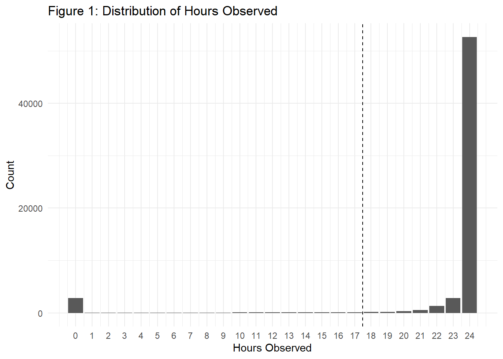

Code
library(tidyverse)
library(geosphere)Transforms the raw datasets to processed ones.
library(tidyverse)
library(geosphere)The table below summarizes the most important variables used throughout the data-building and analysis workflow.
| Air Quality | Fire | Relationship |
|---|---|---|
| Station_Date | Fire_ID | days_since_fire |
| NAPS_ID | Fire_Year | Distance_km |
| Station_Name | Report_Date | fire_count_100km_{7/14/30}d |
| Latitude | Fire_Date | fire_count_250km_{7/14/30}d |
| Longitude | Fire_Latitude | fire_area_250km_{7/14/30}d |
| mean_pm25 | Fire_Longitude | nearest_fire_km_{7/14/30}d |
| max_pm25 | Size_Ha | |
| hours_observed | Cause | |
| valid_day | Response |
First, load data.
pm25_2022 <- read_csv(
"data/raw/airquality/2022/data_2022.csv",
show_col_types = FALSE)
stations_2022 <- read_csv(
"data/raw/airquality/2022/stations_2022.csv",
show_col_types = FALSE)
pm25_2023 <- read_csv(
"data/raw/airquality/2023/data_2023.csv",
show_col_types = FALSE)
stations_2023 <- read_csv(
"data/raw/airquality/2023/stations_2023.csv",
show_col_types = FALSE)
pm25_2024 <- read_csv(
"data/raw/airquality/2024/data_2024.csv",
show_col_types = FALSE)
stations_2024 <- read_csv(
"data/raw/airquality/2024/stations_2024.csv",
show_col_types = FALSE)Second, select station data columns.
station_columns <- c(
"NAPS_ID",
"Station_Name",
"City",
"Latitude",
"Longitude",
"Elevation_m",
"Site_Type",
"Urbanization",
"Land_Use",
"AQMS_Airzone"
)
station_info_2022 <- stations_2022 |>
select(all_of(station_columns))
station_info_2023 <- stations_2023 |>
select(all_of(station_columns))
station_info_2024 <- stations_2024 |>
select(all_of(station_columns))Third, join station and pm25 data by year.
# join each year and add Year column
pm25_2022_joined <- pm25_2022 |>
left_join(station_info_2022, by = "NAPS_ID") |>
mutate(Year = 2022)
pm25_2023_joined <- pm25_2023 |>
left_join(station_info_2023, by = "NAPS_ID") |>
mutate(Year = 2023)
pm25_2024_joined <- pm25_2024 |>
left_join(station_info_2024, by = "NAPS_ID") |>
mutate(Year = 2024)
pm25_2022_joinedLast, combine all years.
pm25_joined <- bind_rows(
pm25_2022_joined,
pm25_2023_joined,
pm25_2024_joined
)
glimpse(pm25_joined)
pm25_joined |> count(Year)Verification.
tibble(
Year = c(2022, 2023, 2024),
Before_Join = c(
nrow(pm25_2022),
nrow(pm25_2023),
nrow(pm25_2024)
),
After_Join = c(
nrow(pm25_2022_joined),
nrow(pm25_2023_joined),
nrow(pm25_2024_joined)
)
)# A tibble: 3 × 3
Year Before_Join After_Join
<dbl> <int> <int>
1 2022 490560 490560
2 2023 481800 481800
3 2024 509472 509472Before_Join and After_Join values are equal, verifying that the joining worked as intended.
Environment and Climate Change Canada considers a PM2.5 daily 24-hour average valid when at least 75% of the hourly measurements (18 to 24) are available (Environment and Climate Change Canada 2026). Therefore, station-days with fewer than 18 observed hours are retained for data-quality tracking but their daily PM2.5 sumaries are treated as missing.
pm25_daily <- pm25_joined |>
group_by(
Year,
Date_yyyy_mm_dd,
NAPS_ID,
Station_Name,
City,
Latitude,
Longitude,
Elevation_m,
Site_Type,
Urbanization,
Land_Use,
AQMS_Airzone
) |>
summarise(
# collapse hourly observations
hours_observed = sum(!is.na(Concentration)),
# collapse hourly observation of pm25 into a mean, max pm25 of the day
mean_pm25 = if (sum(!is.na(Concentration)) >= 18) {
mean(Concentration, na.rm=TRUE)
} else {
NA_real_
},
max_pm25 = if (sum(!is.na(Concentration)) >= 18) {
max(Concentration, na.rm=TRUE)
} else {
NA_real_
},
.groups = "drop"
)
pm25_daily <- pm25_daily |>
rename(
Station_Date = Date_yyyy_mm_dd
) |>
mutate(Month = lubridate::month(Station_Date), valid_day = hours_observed >= 18)
glimpse(pm25_daily)
pm25_daily |> count(Year, valid_day)Do not filter valid_day = FALSE as this is still useful information.
# percent
pm25_daily |>
group_by(Year) |>
summarise(
station_days = n(),
valid_days = sum(valid_day),
invalid_days = sum(!valid_day),
percent_valid = mean(valid_day) * 100,
.groups = "drop"
)# A tibble: 3 × 5
Year station_days valid_days invalid_days percent_valid
<dbl> <int> <int> <int> <dbl>
1 2022 20440 19440 1000 95.1
2 2023 20075 18902 1173 94.2
3 2024 21228 19663 1565 92.6pm25_daily_hours_observed <- pm25_daily |>
count(hours_observed) |>
arrange(desc(hours_observed))
pm25_daily |>
ggplot(aes(x = hours_observed)) +
geom_bar() +
scale_x_continuous(breaks = 0:24) +
labs(
title = "Figure 1: Distribution of Hours Observed",
x = "Hours Observed",
y = "Count"
) +
geom_vline(xintercept = 17.5, linetype = "dashed") +
theme_minimal()
First, load.
large_fires <- read_csv(
"data/raw/wildfire/NFDB_point_large_fires.txt",
col_types = cols(ATTK_DATE = col_datetime()))
glimpse(large_fires)Second, clean.
large_fires_clean <- large_fires |>
filter(
SRC_AGENCY == "BC",
YEAR %in% 2022:2024
) |>
mutate(
Fire_Year = YEAR,
Report_Date = as.Date(REP_DATE),
Report_Year = lubridate::year(Report_Date),
Cause = recode(
CAUSE22,
"N" = "Natural",
"H" = "Human",
"U" = "Unknown"
),
Response = recode(
RESPONSE,
"FUL" = "Full",
"MOD" = "Modified",
"MON" = "Monitor"
)
) |>
select(
Fire_ID = NFDBFIREID,
Fire_Year,
Report_Date,
Report_Year,
Fire_Latitude = LATITUDE,
Fire_Longitude = LONGITUDE,
Size_Ha = SIZE_HA,
Cause,
Response
)
glimpse(large_fires_clean)Now, it went from 24 variables to 9 variables.
Third, verify.
summary(large_fires_clean$Size_Ha) Min. 1st Qu. Median Mean 3rd Qu. Max.
200.0 372.1 1026.8 10549.5 4041.1 619072.5 large_fires_clean |>
count(Fire_Year, Report_Year)# A tibble: 4 × 3
Fire_Year Report_Year n
<dbl> <dbl> <int>
1 2022 2022 63
2 2023 2023 219
3 2024 2023 4
4 2024 2024 96Size_Ha result matches the one from exploration. From the result, we find that there are 4 rows disagreeing on the year.
large_fires_clean |>
filter(Fire_Year != Report_Year) |>
select(
Fire_ID,
Fire_Year,
Report_Date,
Report_Year,
Size_Ha,
Cause,
Response
)# A tibble: 4 × 7
Fire_ID Fire_Year Report_Date Report_Year Size_Ha Cause Response
<chr> <dbl> <date> <dbl> <dbl> <chr> <chr>
1 BC-2024-2024-G90228 2024 2023-06-28 2023 508453. Natural Full
2 BC-2024-2024-G90399 2024 2023-07-06 2023 18597. Natural Full
3 BC-2024-2024-G90777 2024 2023-06-04 2023 307. Natural Full
4 BC-2024-2024-G90207 2024 2023-07-16 2023 170807. Natural Full *Important: Not to overwrite Report_Date; instead, create a new variable: Fire_Date
# two fire dates identified, two fire given NA
large_fires_clean <- large_fires_clean |>
mutate(
Fire_Date = case_when(
Fire_ID == "BC-2024-2024-G90228" ~ as.Date("2024-05-05"),
Fire_ID == "BC-2024-2024-G90207" ~ as.Date("2024-05-02"),
Fire_ID %in% c("BC-2024-2024-G90399", "BC-2024-2024-G90777") ~ as.Date(NA),
TRUE ~ Report_Date
)
)
# add Date_Status to indicate the corrected and unresolved ones
large_fires_clean <- large_fires_clean |>
mutate(
Date_Status = case_when(
Fire_ID %in% c("BC-2024-2024-G90228", "BC-2024-2024-G90207") ~ "Verified correction",
Fire_ID %in% c("BC-2024-2024-G90399", "BC-2024-2024-G90777") ~ "Unresolved",
TRUE ~ "Original"
)
)
glimpse(large_fires_clean)With this addition of variables, the total became 11.
Previously, since it had no missing values, REP_DATE was assumed to be a reliable field. Yet, this showed that everything needs to be heeded to carefully, including validity and consistency.
large_fires_clean |>
count(Date_Status)# A tibble: 3 × 2
Date_Status n
<chr> <int>
1 Original 378
2 Unresolved 2
3 Verified correction 2large_fires_clean |>
summarise(
usable_temporal_records = sum(!is.na(Fire_Date)),
unusable_temporal_records = sum(is.na(Fire_Date))
)# A tibble: 1 × 2
usable_temporal_records unusable_temporal_records
<int> <int>
1 380 2Using both the PM2.5 joined data (pm25_daily) and large wildfires data (large_fires_clean)
Check that the station’s coordinates does not change.
station_coordinate_check <- pm25_daily |>
distinct(NAPS_ID, Latitude, Longitude) |>
count(NAPS_ID, name = "coordinate_versions") |>
filter(coordinate_versions > 1)
station_coordinate_check# A tibble: 0 × 2
# ℹ 2 variables: NAPS_ID <dbl>, coordinate_versions <int>The result confirms that the each station’s coordinates did not change.
For this, going to use geosphere.
*Important: geosphere expects coordinates in c(Longitude, Latitude) order
Extract station ID, name, city, and location coordinates.
station_locations <- pm25_daily |>
distinct(
NAPS_ID,
Station_Name,
City,
Latitude,
Longitude
)
glimpse(station_locations)Rows: 60
Columns: 5
$ NAPS_ID <dbl> 100103, 100110, 100111, 100119, 100121, 100125, 100127, 1…
$ Station_Name <chr> "NEW WESTMINSTER", "BURNABY - KENSINGTON PARK", "PORT MOO…
$ City <chr> "METRO VANCOUVER - NEW WESTMINSTER (BC)", "METRO VANCOUVE…
$ Latitude <dbl> 49.22704, 49.27921, 49.28089, 49.21519, 49.30147, 49.1583…
$ Longitude <dbl> -122.8945, -122.9707, -122.8493, -122.9857, -123.0204, -1…nrow(station_locations)[1] 60Across the three years, there were stations that only appear in only one or two years.
# create a dataframe of only usable data
large_fires_temporal <- large_fires_clean |>
filter(!is.na(Fire_Date))
glimpse(large_fires_temporal)AI was used to suggest using tidyr::crossing() to do cartesian product.
# use cartesian product
station_fire_pairs <- tidyr::crossing(
station_locations,
large_fires_temporal |>
select(
Fire_ID,
Fire_Date,
Fire_Latitude,
Fire_Longitude,
Size_Ha
)
)
glimpse(station_fire_pairs)Results in 10 variables and 22,800 data.
What I want:
Station A | data
Station A | data
Station A | data
…(until it runs through large_fires_temporal rows)
Station B | data
…(same thing)
This means that each station is associated with all the data in large_fires_temporal. Thus, the following MUST BE TRUE:
nrow(station_fire_pairs) == nrow(station_locations) * nrow(large_fires_temporal)[1] TRUEAI disclosure: ChatGPT was used to suggest using geosphere::distHarversine for geographic distance calculation. The function’s behaviour and assumptions were verified using geosphere documentations (Hijmans 2026).
station_fire_distances <- station_fire_pairs |>
mutate(
Distance_km =
geosphere::distHaversine(
cbind(Longitude, Latitude),
cbind(Fire_Longitude, Fire_Latitude)
) / 1000
)Latitude and longitude represent angular geographic coordinates rather than distances in kilometres. Therefore, directly calculating Euclidean distance from differences in latitude and longitude cannot work.
distHaversine() function calculates the shortest distance between two points. It also accepts longitude and latitude coordinates and calculate spherically (Hijmans 2026). Ex. distHarversine(c(0,0), c(90,90)). It returns the distance in metres which is the reason for /1000 to convert to kilometres.
Try a known value: following must be 111.3 km.
geosphere::distHaversine(
c(0, 0),
c(1, 0)
) / 1000[1] 111.3195# check distances
summary(station_fire_distances$Distance_km) Min. 1st Qu. Median Mean 3rd Qu. Max.
1.618 324.217 492.015 540.061 713.532 1667.582 station_fire_distances |>
arrange(Distance_km) |>
select(
NAPS_ID,
Station_Name,
Fire_ID,
Fire_Date,
Size_Ha,
Distance_km
) |>
slice_head(n = 10)# A tibble: 10 × 6
NAPS_ID Station_Name Fire_ID Fire_Date Size_Ha Distance_km
<dbl> <chr> <chr> <date> <dbl> <dbl>
1 101401 HOPE - AIRPORT BC-202… 2022-09-09 845 1.62
2 103021 SPARWOOD - CENTENNIAL SQUARE BC-202… 2023-07-21 1295 3.26
3 105201 BURNS LAKE - FIRE CENTRE BC-202… 2023-07-07 8044 7.88
4 100703 KELOWNA - 1450 KLO RD. BC-202… 2023-08-17 733 8.05
5 104101 GRAND FORKS - CITY HALL BC-202… 2022-10-09 203 10.0
6 101904 CRANBROOK - MURIEL BAXTER BC-202… 2022-08-01 1719. 12.0
7 105101 HOUSTON - FIREHALL BC-202… 2023-07-06 1445. 12.8
8 100703 KELOWNA - 1450 KLO RD. BC-202… 2023-08-15 13970. 12.9
9 103905 KITIMAT - HAISLA VILLAGE BC-202… 2023-07-07 200 13.8
10 102602 PORT ALBERNI - ALBERNI ELEMEN… BC-202… 2023-06-03 229 14.2 Checking if a fire have been active within 30 days of a PM2.5 data. If so, then register as a candidate.
# calculates 30 days before Station_Date
station_day_fire_candidates <- pm25_daily |>
mutate(Window_Start = Station_Date - lubridate::days(30))
# check
station_day_fire_candidates |>
slice_sample(n=5) |>
select(Window_Start, Station_Date)Join station_fire_distances and station_day_fire_candidates. Comparing variables of the two datasets:
all_columns <- union(names(station_fire_distances), names(station_day_fire_candidates))
data.frame(
station_fire_distances = ifelse(
all_columns %in% names(station_fire_distances),
all_columns,
NA
),
station_day_fire_candidates = ifelse(
all_columns %in% names(station_day_fire_candidates),
all_columns,
NA
),
existInBoth = all_columns %in% names(station_fire_distances) &
all_columns %in% names(station_day_fire_candidates)
)We are selecting NAPS_ID, Fire_ID, Fire_Date, Size_Ha, Distance_km from the station-fire distances dataframe. Then joining it when each of its data matches with each of the data in fire-candidates-to-station dataframe.
The match is determined by the following conditions:
station_day_fire_candidates <- station_day_fire_candidates |>
inner_join(
station_fire_distances |>
select(NAPS_ID, Fire_ID, Fire_Date, Size_Ha, Distance_km),
by = join_by(
NAPS_ID,
Window_Start <= Fire_Date,
Station_Date >= Fire_Date
),
relationship = "many-to-many" # since each station-day can have many fire
) |>
mutate(days_since_fire = as.numeric(Station_Date - Fire_Date))
glimpse(station_day_fire_candidates)summary(station_day_fire_candidates$days_since_fire) Min. 1st Qu. Median Mean 3rd Qu. Max.
0 7 15 15 23 30 all(
station_day_fire_candidates$days_since_fire >= 0 &
station_day_fire_candidates$days_since_fire <= 30
)[1] TRUEThese verify that the days_since_fire falls between 0 to 30.
A data: one station-day paired with one fire reported in the previous 30 days
For example, on the same date on the same station, there will be many fire associated with it.
station_day_fire_candidates |>
arrange(Station_Date, Station_Name) |>
select(Station_Date, Station_Name, Fire_ID, days_since_fire, Distance_km) |>
head()# A tibble: 6 × 5
Station_Date Station_Name Fire_ID days_since_fire Distance_km
<date> <chr> <chr> <dbl> <dbl>
1 2022-05-31 ABBOTSFORD - AIRPORT - 3 BC-2022-20… 0 1229.
2 2022-05-31 ABBOTSFORD - MILL LAKE BC-2022-20… 0 1226.
3 2022-05-31 AGASSIZ - 7170 CHEAM AVE. BC-2022-20… 0 1201.
4 2022-05-31 BURNABY - KENSINGTON PARK BC-2022-20… 0 1206.
5 2022-05-31 BURNABY - SOUTH BC-2022-20… 0 1213.
6 2022-05-31 BURNS LAKE - FIRE CENTRE BC-2022-20… 0 728.Example of an extreme PM2.5 events (Kamloops case - found in file 01). It shows that there really was a cluster of large-fire reports during one period.
station_day_fire_candidates |>
filter(
Station_Date == as.Date("2023-08-21"),
str_detect(Station_Name, "KAMLOOPS")
) |>
arrange(Distance_km) |>
transmute(
Fire_ID,
Fire_Date,
days_since_fire,
Size_Ha,
Distance_km = round(Distance_km, 1)
) |>
slice_head(n = 10)# A tibble: 10 × 5
Fire_ID Fire_Date days_since_fire Size_Ha Distance_km
<chr> <date> <dbl> <dbl> <dbl>
1 BC-2023-2023-K42815 2023-08-18 3 373. 96
2 BC-2023-2023-K52767 2023-08-15 6 13970. 98.8
3 BC-2023-2023-K52808 2023-08-17 4 733 103.
4 BC-2023-2023-K72705 2023-08-09 12 1016. 124.
5 BC-2023-2023-K52813 2023-08-18 3 2044. 159.
6 BC-2023-2023-K52125 2023-07-22 30 46504. 168.
7 BC-2023-2023-N52372 2023-07-30 22 200 184.
8 BC-2023-2023-V12722 2023-08-13 8 1518. 187.
9 BC-2023-2023-G32441 2023-07-25 27 231 190.
10 BC-2023-2023-K52318 2023-07-29 23 7061. 196. Currently, Kamloops station on August 21 might appear 20+ times because it can be paired with 20+ different fires. Instead, we want one data: Kamloops + 2023-0-21 to contain a SUMMARY of all relevant fires.
First, create variables that classifies distances. When we ask: How many fires were within 100 km and 14 days?, we can answer simply.
station_day_fire_candidates <- station_day_fire_candidates |>
mutate(
within_7_days = days_since_fire <= 7,
within_14_days = days_since_fire <= 14,
within_30_days = days_since_fire <= 30,
within_100_km = Distance_km <= 100,
within_250_km = Distance_km <= 250
)Check if it works, must get TRUE for all.
station_day_fire_candidates |>
summarise(
all_7_within_30 = all(!within_7_days | within_30_days),
all_14_within_30 = all(!within_14_days | within_30_days),
all_100_within_250 = all(!within_100_km | within_250_km)
)# A tibble: 1 × 3
all_7_within_30 all_14_within_30 all_100_within_250
<lgl> <lgl> <lgl>
1 TRUE TRUE TRUE station_day_fire_candidates |>
summarise(
within_7_days = sum(within_7_days),
within_14_days = sum(within_14_days),
within_30_days = sum(within_30_days),
within_100_km = sum(within_100_km),
within_250_km = sum(within_250_km)
)# A tibble: 1 × 5
within_7_days within_14_days within_30_days within_100_km within_250_km
<int> <int> <int> <int> <int>
1 170056 318855 658967 15965 120280Second and importantly, collapse all these fire features into one row.
station_day_fire_features <- station_day_fire_candidates |>
group_by(NAPS_ID, Station_Date) |>
summarise(
# fire counts within 100 km
fire_count_100km_7d = sum(within_100_km & within_7_days),
fire_count_100km_14d = sum(within_100_km & within_14_days),
fire_count_100km_30d = sum(within_100_km & within_30_days),
# fire counts within 250 km
fire_count_250km_7d = sum(within_250_km & within_7_days),
fire_count_250km_14d = sum(within_250_km & within_14_days),
fire_count_250km_30d = sum(within_250_km & within_30_days),
# total size of nearby fires - for rough estimate of recently reported large-fire area nearby
fire_area_250km_7d = sum(Size_Ha[within_250_km & within_7_days]),
fire_area_250km_14d = sum(Size_Ha[within_250_km & within_14_days]),
fire_area_250km_30d = sum(Size_Ha[within_250_km & within_30_days]),
# nearest fire within each time window
nearest_fire_km_7d =
if (any(within_7_days)) {
min(Distance_km[within_7_days])
} else {
NA_real_
},
nearest_fire_km_14d =
if (any(within_14_days)) {
min(Distance_km[within_14_days])
} else {
NA_real_
},
nearest_fire_km_30d = min(Distance_km),
.groups = "drop"
)
glimpse(station_day_fire_features)station_day_fire_features |>
arrange(desc(fire_count_250km_14d)) |>
slice_head(n = 10)# A tibble: 10 × 14
NAPS_ID Station_Date fire_count_100km_7d fire_count_100km_14d
<dbl> <date> <int> <int>
1 105201 2023-07-15 11 23
2 105201 2023-07-17 2 22
3 105201 2023-07-18 0 22
4 105201 2023-07-19 0 22
5 105201 2023-07-20 0 22
6 105201 2023-07-12 22 23
7 105201 2023-07-13 22 23
8 105201 2023-07-14 21 23
9 105201 2023-07-16 5 22
10 105201 2023-07-21 0 21
# ℹ 10 more variables: fire_count_100km_30d <int>, fire_count_250km_7d <int>,
# fire_count_250km_14d <int>, fire_count_250km_30d <int>,
# fire_area_250km_7d <dbl>, fire_area_250km_14d <dbl>,
# fire_area_250km_30d <dbl>, nearest_fire_km_7d <dbl>,
# nearest_fire_km_14d <dbl>, nearest_fire_km_30d <dbl>Last, verify. The following must show 0.
station_day_fire_features |>
count(NAPS_ID, Station_Date) |>
filter(n > 1)# A tibble: 0 × 3
# ℹ 3 variables: NAPS_ID <dbl>, Station_Date <date>, n <int>This confirms that each row is has a unique station ID and station observed date as we intended: NAPS_ID + STATION_DATE + Summary of fires.
Data Audit
fire_area_ is not reliable for prediction. The area of fire is always changing but this value is not since CNFDB dataset gives one size for each fire.
Auditing, following must all be TRUE.
station_day_fire_features |>
summarise(
# count audit
count_100_dist_250 = all(fire_count_100km_14d <= fire_count_250km_14d),
count_7_days_14 = all(fire_count_250km_7d <= fire_count_250km_14d),
count_14_days_30 = all(fire_count_250km_14d <= fire_count_250km_30d),
# size audit
area_7_days_14 = all(fire_area_250km_7d <= fire_area_250km_14d),
area_14_days_30 = all(fire_area_250km_14d <= fire_area_250km_30d),
# nearest value must be either same or less with greater data including the same ones
nearest_30_days_14 = all(is.na(nearest_fire_km_14d) | nearest_fire_km_30d <= nearest_fire_km_14d)
)# A tibble: 1 × 6
count_100_dist_250 count_7_days_14 count_14_days_30 area_7_days_14
<lgl> <lgl> <lgl> <lgl>
1 TRUE TRUE TRUE TRUE
# ℹ 2 more variables: area_14_days_30 <lgl>, nearest_30_days_14 <lgl>Remember we joined: air quality station_locations and fire data. Now, we want every air-quality station day data preserved.
analysis_daily <- pm25_daily |>
left_join(
station_day_fire_features,
by = c(
"NAPS_ID",
"Station_Date"
)
)
glimpse(analysis_daily)If no qualifying fires exist, fire_count_ and fire_area_ shouldn’t be NA; it should be 0. Yet, nearest_fire_distance_ are still NA because if it is 0, it would mean the fire is located at the monitoring station.
AI Disclosure: ChatGPT was used to find the code like starts_with() and ~ replace_na(). It helped the code to be efficient as columns started with the same part and had to replace the same value: NA to 0.
analysis_daily <- analysis_daily |>
mutate(
across(
starts_with("fire_count_"),
~ replace_na(.x, 0L)
),
across(
starts_with("fire_area_"),
~ replace_na(.x, 0)
)
)Auditing,
# check that it didn't lose rows
nrow(analysis_daily) == nrow(pm25_daily)[1] TRUE# check that the number NA values is 0
analysis_daily |>
summarise(
fire_count_ = sum(is.na(pick(starts_with("fire_count_")))),
fire_area_ = sum(is.na(pick(starts_with("fire_area_"))))
)# A tibble: 1 × 2
fire_count_ fire_area_
<int> <int>
1 0 0glimpse(analysis_daily)Rows: 61,743
Columns: 29
$ Year <dbl> 2022, 2022, 2022, 2022, 2022, 2022, 2022, 2022, 2…
$ Station_Date <date> 2022-01-01, 2022-01-01, 2022-01-01, 2022-01-01, …
$ NAPS_ID <dbl> 100103, 100110, 100111, 100119, 100121, 100125, 1…
$ Station_Name <chr> "NEW WESTMINSTER", "BURNABY - KENSINGTON PARK", "…
$ City <chr> "METRO VANCOUVER - NEW WESTMINSTER (BC)", "METRO …
$ Latitude <dbl> 49.22704, 49.27921, 49.28089, 49.21519, 49.30147,…
$ Longitude <dbl> -122.8945, -122.9707, -122.8493, -122.9857, -123.…
$ Elevation_m <dbl> 45, 104, 6, 122, 4, 113, 79, 4, 71, 1, 65, 52, 30…
$ Site_Type <chr> "PE", "T", "PS", "PE", "PE", "PE", "T", "PE", "PE…
$ Urbanization <chr> "LU", "LU", "LU", "LU", "LU", "LU", "LU", "LU", "…
$ Land_Use <chr> "R", "R", "W", "R", "I", "R", "R", "R", "R", "C",…
$ AQMS_Airzone <chr> "British Columbia - Lower Fraser Valley", "Britis…
$ hours_observed <int> 24, 24, 24, 24, 24, 24, 24, 24, 24, 24, 23, 24, 2…
$ mean_pm25 <dbl> 5.833333, 2.916667, 6.916667, 1.708333, 3.250000,…
$ max_pm25 <dbl> 9, 12, 21, 3, 7, 11, 6, 7, 7, 12, 13, 5, 52, 12, …
$ Month <dbl> 1, 1, 1, 1, 1, 1, 1, 1, 1, 1, 1, 1, 1, 1, 1, 1, 1…
$ valid_day <lgl> TRUE, TRUE, TRUE, TRUE, TRUE, TRUE, TRUE, TRUE, T…
$ fire_count_100km_7d <int> 0, 0, 0, 0, 0, 0, 0, 0, 0, 0, 0, 0, 0, 0, 0, 0, 0…
$ fire_count_100km_14d <int> 0, 0, 0, 0, 0, 0, 0, 0, 0, 0, 0, 0, 0, 0, 0, 0, 0…
$ fire_count_100km_30d <int> 0, 0, 0, 0, 0, 0, 0, 0, 0, 0, 0, 0, 0, 0, 0, 0, 0…
$ fire_count_250km_7d <int> 0, 0, 0, 0, 0, 0, 0, 0, 0, 0, 0, 0, 0, 0, 0, 0, 0…
$ fire_count_250km_14d <int> 0, 0, 0, 0, 0, 0, 0, 0, 0, 0, 0, 0, 0, 0, 0, 0, 0…
$ fire_count_250km_30d <int> 0, 0, 0, 0, 0, 0, 0, 0, 0, 0, 0, 0, 0, 0, 0, 0, 0…
$ fire_area_250km_7d <dbl> 0, 0, 0, 0, 0, 0, 0, 0, 0, 0, 0, 0, 0, 0, 0, 0, 0…
$ fire_area_250km_14d <dbl> 0, 0, 0, 0, 0, 0, 0, 0, 0, 0, 0, 0, 0, 0, 0, 0, 0…
$ fire_area_250km_30d <dbl> 0, 0, 0, 0, 0, 0, 0, 0, 0, 0, 0, 0, 0, 0, 0, 0, 0…
$ nearest_fire_km_7d <dbl> NA, NA, NA, NA, NA, NA, NA, NA, NA, NA, NA, NA, N…
$ nearest_fire_km_14d <dbl> NA, NA, NA, NA, NA, NA, NA, NA, NA, NA, NA, NA, N…
$ nearest_fire_km_30d <dbl> NA, NA, NA, NA, NA, NA, NA, NA, NA, NA, NA, NA, N…Verified that no rows were lost (TRUE) and all NA values in fire_count_ and fire_area_ were replaced by 0.
We will be looking through two stations that had a very high PM2.5 in 2023.
We already have data about them from our file 01. Compare to check that every data have been preserved.
# Fort St. John
case_study_fires <- station_day_fire_candidates |>
filter(
(
Station_Date == as.Date("2023-08-21") &
str_detect(Station_Name, "KAMLOOPS")
) |
(
Station_Date == as.Date("2023-05-19") &
str_detect(Station_Name, "FORT ST. JOHN")
)
) |>
filter(
within_250_km,
within_14_days
) |>
select(
Station_Date,
Station_Name,
Fire_ID,
Fire_Date,
days_since_fire,
Size_Ha,
Distance_km
)
case_study_fires# A tibble: 10 × 7
Station_Date Station_Name Fire_ID Fire_Date days_since_fire Size_Ha
<date> <chr> <chr> <date> <dbl> <dbl>
1 2023-05-19 FORT ST. JOHN - LEAR… BC-202… 2023-05-05 14 2947
2 2023-05-19 FORT ST. JOHN - LEAR… BC-202… 2023-05-12 7 619072.
3 2023-05-19 FORT ST. JOHN - LEAR… BC-202… 2023-05-13 6 29506.
4 2023-05-19 FORT ST. JOHN - LEAR… BC-202… 2023-05-11 8 42838.
5 2023-08-21 KAMLOOPS - FEDERAL B… BC-202… 2023-08-18 3 373.
6 2023-08-21 KAMLOOPS - FEDERAL B… BC-202… 2023-08-15 6 13970.
7 2023-08-21 KAMLOOPS - FEDERAL B… BC-202… 2023-08-17 4 733
8 2023-08-21 KAMLOOPS - FEDERAL B… BC-202… 2023-08-18 3 2044.
9 2023-08-21 KAMLOOPS - FEDERAL B… BC-202… 2023-08-09 12 1016.
10 2023-08-21 KAMLOOPS - FEDERAL B… BC-202… 2023-08-13 8 1518.
# ℹ 1 more variable: Distance_km <dbl>Error: For Kamloops and Fort St. John stations, max_pm25 are supposed to be 982 and 2112 as we found in file 01, but this data shows that they are 596 and 461 – equal to the mean_pm25.
Recalculating max_pm25 and mean_pm25 on raw-joined data (pm25_joined) showed that the raw data was preserved. Reviewing the aggregation code showed that mean() had accidentally been used for both variables – a copy-past error. The max_pm25 was corrected to use max().
Important: Always compare processed results againt known raw observations. Code may execute successfully but will not gurantee that correctness.
For the validation, we will manually find out fire_count_250km_14d and compare with the actual value.
kamloops_manual_check <- station_day_fire_candidates |>
filter(
Station_Date == as.Date("2023-08-21"),
str_detect(Station_Name, "KAMLOOPS")
) |>
summarise(
manual_count_250km_14d = sum(within_250_km & within_14_days),
manual_area_250km_14d = sum(Size_Ha[within_250_km & within_14_days]),
manual_nearest_fire_14d = min(Distance_km[within_14_days])
)
kamloops_actual_values <- analysis_daily |>
filter(
Station_Date == as.Date("2023-08-21"),
str_detect(Station_Name, "KAMLOOPS")
) |>
select(
fire_count_250km_14d,
fire_area_250km_14d,
nearest_fire_km_14d
)
# manual
kamloops_manual_check# A tibble: 1 × 3
manual_count_250km_14d manual_area_250km_14d manual_nearest_fire_14d
<int> <dbl> <dbl>
1 6 19653 96.0# actual
kamloops_actual_values# A tibble: 1 × 3
fire_count_250km_14d fire_area_250km_14d nearest_fire_km_14d
<int> <dbl> <dbl>
1 6 19653 96.0They are the same; validated. Plus, we can see that the area value is quite high.
write_csv(analysis_daily, "data/processed/analysis_daily.csv")
analysis_valid <- analysis_daily |>
filter(valid_day)
write_csv(analysis_valid, "data/processed/analysis_valid.csv")
write_csv(large_fires_clean, "data/processed/large_fires_clean.csv")
write_csv(case_study_fires, "data/processed/case_study_fires.csv")